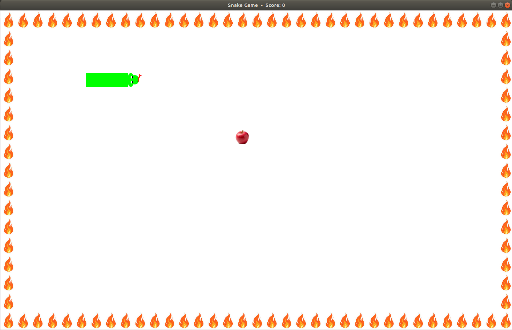

Snake is 2D game that I developed using C++ and SFML graphics library. For more information about SFML please check the link.
A game scene from Snake is shown below.

Aim of the game is to grow the snake as much as possible by eating fruits. Every time a fruit is eaten, game score is incremented one and it is shown above next to the title. If you hit the fire on the edges or the tail of the snake game will be over. When game is over a message box is displayed with game score and game window will be closed after 5 seconds.
If you are more interested in Snake game, you can check the Github page of the Snake project.
Some of the gameplay videos of Snake game are shown below.